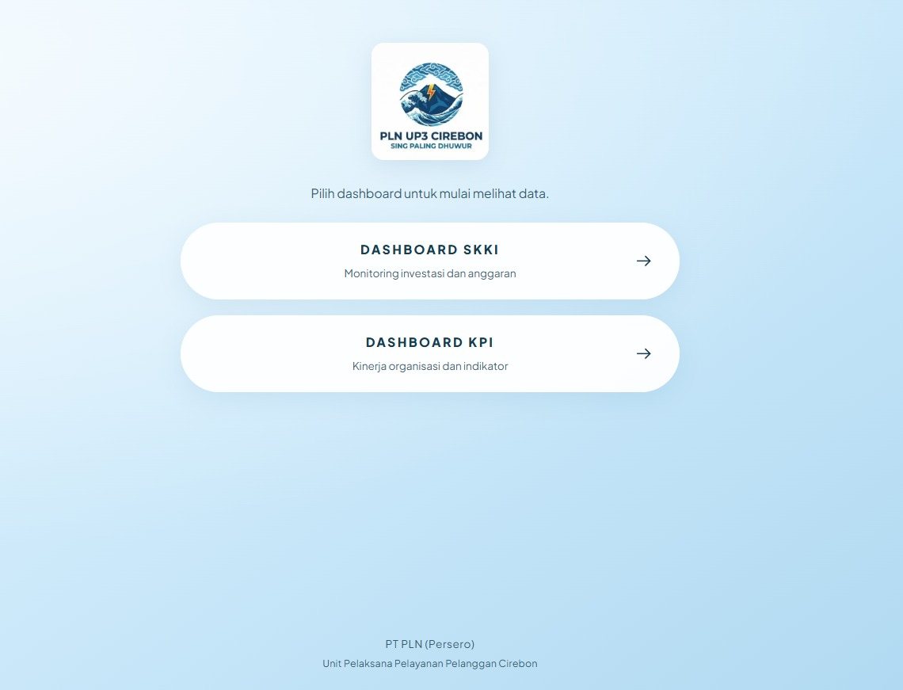
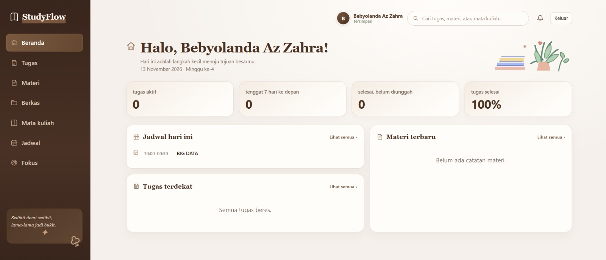
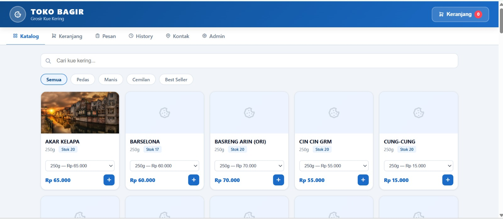

Tentang Saya
Halo, saya Bebyolanda Az Zahra, mahasiswa semester 5 Program Studi Teknik Informatika di Universitas Muhammadiyah Cirebon. Saya menyukai dunia teknologi, terutama pengembangan website dan perancangan antarmuka pengguna (UI/UX).
Pengalaman yang paling berkesan saya dapatkan ketika magang di PT PLN (Persero) UP3 Cirebon, Divisi Perencanaan. Di sana saya terlibat dalam pengelolaan anggaran investasi, pemantauan kinerja korporat, dan perencanaan sistem kelistrikan untuk pelanggan, serta membuat dashboard monitoring berbasis web (SKKI) agar data manajemen lebih mudah dipantau secara interaktif.
Di luar perkuliahan, saya aktif menjadi pengurus Himpunan Mahasiswa Teknik Informatika (HIMASANTIKA) di Departemen Bisnis dan Kemitraan. Saya terbiasa bekerja dengan teliti, berkomunikasi dengan baik, dan senang belajar hal baru bersama tim.
Ke depan, saya semakin tertarik mendalami data science dan dunia data, mulai dari mengolah, menganalisis, hingga menyajikan data menjadi informasi yang berguna untuk pengambilan keputusan. Saya ingin memadukan kemampuan pemrograman web dengan analisis data untuk membangun solusi yang berbasis data.
Pendidikan
Universitas Muhammadiyah Cirebon (UMC)
Mempelajari Rekayasa Perangkat Lunak, Pemrograman Berorientasi Objek, Desain Basis Data, Pemrograman Berbasis Platform, serta Analisis & Desain Sistem Informasi.
Keahlian
Technical Skills
Soft Skills
Pengalaman
Magang / Praktik Kerja Lapangan (PKL)
Divisi PerencanaanPT PLN (Persero) UP3 Cirebon
Tugas & Tanggung Jawab (Jobdesk):
-
1Mengelola anggaran investasi PLN UP3 Cirebon – Melakukan monitoring, rekapitulasi data alokasi anggaran, serta evaluasi penyerapan dana investasi proyek ketenagalistrikan secara terstruktur.
-
2Mengelola kinerja Corporate PLN UP3 Cirebon – Mengolah dan menganalisis indikator performa korporat (KPI), menyusun laporan capaian target kinerja unit, serta memastikan akurasi data operasional.
-
3Merencanakan sistem kelistrikan untuk melayani kebutuhan Listrik pelanggan PLN UP3 Cirebon – Berkontribusi dalam pemetaan dan perencanaan kebutuhan jaringan kelistrikan guna mendukung keandalan pasokan dan permohonan pasang baru pelanggan.
-
4Membuat dan mengembangkan dashboard monitoring berbasis web – Merancang aplikasi dashboard interaktif (SKKI) yang mengintegrasikan Google Sheets dan Google Apps Script dengan visualisasi grafik, tabel data real-time, dan peta monitoring untuk mempermudah monitoring manajemen.
Pengalaman Organisasi
Himpunan Mahasiswa Teknik Informatika (HIMASANTIKA)
- Menginisiasi dan mengelola program kewirausahaan mahasiswa untuk mendukung operasional dan kemandirian finansial organisasi.
- Membangun serta memelihara relasi kemitraan dan sponsorship eksternal untuk penyelenggaraan seminar teknologi dan kegiatan himpunan.
- Berkolaborasi aktif dalam kepanitiaan program kerja tahunan tingkat program studi.
Project
Berikut adalah project yang telah saya bangun selama perkuliahan dan magang menggunakan Next.js.

Web ApplicationDashboard Monitoring SKKI&KPI PLN
Dashboard pemantauan anggaran dan kinerja berbasis web dengan grafik real-time, tabel rekapitulasi, dan visualisasi data yang terintegrasi dengan Google Sheets.

Web ApplicationStudyFlow
Aplikasi pendukung belajar untuk mengatur jadwal, tugas, dan progres belajar secara terstruktur agar waktu belajar lebih efektif.

E-CommerceToko Bagir
Aplikasi toko online untuk membeli produk secara daring, mulai dari melihat katalog produk, memasukkan ke keranjang, hingga melakukan pemesanan.
Kontak
Tertarik untuk berkolaborasi, mendiskusikan peluang kerja, atau sekadar berjejaring? Silakan hubungi saya melalui kanal berikut: